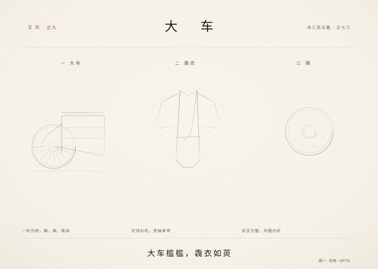

第七十三篇 大车
王风 · 之九 SJ073
朗读 · 普通话
依经文原文朗读，章次不读出；配古琴底乐，不改速、不加拖腔。全库同一音色（豆包 TTS），非播音员录制。
一 解题
诗三判：
- 谁在说：一个想奔而不敢奔的人。前二章是「岂不尔思，畏子不敢」的自道；三章是「榖则异室，死则同穴」的自誓。按毛序，是「陈古以刺今」——借古之畏法者，刺今之不能听讼者。
- 说什么事：大车槛槛而行，毳衣色如初生之荻、如赤玉；车中之人（大夫）仪容可畏，故不敢。不敢于生，则誓于死：生不同室，死则同穴；若不信，有如皦日。
- 为何编在此：王风第九。上篇《采葛》写臣惧谗，此篇写民畏法；一在朝，一在野，皆「有所畏而不敢」之世。
《毛序》：「《大车》，刺周大夫也。礼义陵迟，男女淫奔，故陈古以刺今大夫不能听男女之讼焉。」
毛传：「大车，大夫之车。槛槛，车行声也。毳衣，大夫之服。菼，鵻也，芦之初生者也。」
郑笺：「此二句者，古之欲淫奔者之辞。我岂不思与女以为无礼与？畏子大夫来听讼，将罪我，故不敢也。子者，称所尊敬之辞。」
朱子《诗集传》：「赋也。大车，大夫车。毳衣，衣之属毳者，天子大夫之服也。菼，芦之始生也。」又云：「尔，淫奔者相命之辞也。子，大夫也。不敢，不敢奔也。」
本库的看法：《大车》是一首「畏而不奔」的诗。
三章两境：前二章写「畏」——车声、衣色、仪容，三样皆是威；三章写「誓」——生异室、死同穴，以皦日为证。畏在生前，誓在死后；一诗之内，礼与情各占一半。
先辨六物：大车非小车，毛传、朱传皆以为大夫之车；牛车是后世别解，二说须分；毳衣是毳冕之服，非毡篷（闻一多别解）；菼是芦之初生，青白色，非荻；璊是赤玉之色，非玉名；榖是「生」，非谷物；皦是「皎」，白而明。
二 经文
第一章
大车槛槛，毳衣如菼。岂不尔思？畏子不敢。
第二章
大车啍啍，毳衣如璊。岂不尔思？畏子不奔。
第三章
谷则异室，死则同穴。谓予不信，有如皦日。
分章：三章，章四句。
章末韵：一章槛、菼、敢（谈部）；二章啍、璊、奔（文部）；三章室、穴、日（质部）。
三 韵读
| 一 |
槛 / 菼 / 敢 |
谈部，平上通押 |
| 二 |
啍 / 璊 / 奔 |
文部，平声 |
| 三 |
室 / 穴 / 日 |
质部，入声 |
《诗本音》：槛【二十九槛】、菼【四十九敢】、敢【四十九敢】；啍【二十三魂】、璊【二十三魂】、奔【二十三魂】；室【五质】、穴【五质】、日【五质】。一章槛、菼、敢同部；二章啍、璊、奔同部；三章室、穴、日同部，皆一章一韵，不换韵。
三章体例与前一、二章不同：前二章「岂不尔思」用问，三章不用问而用誓。问是礼，誓是情；问在生，誓在死。
四 字义与名物
字义
- 槛槛（kǎn）——车行声；毛传「车行声也」。不是「门槛」。
- 啍啍（tūn）——车行重迟之声；毛传「重迟之貌」。与「槛槛」别：一轻一重。
- 岂不尔思——「岂不思尔」的倒文；岂，难道。不是「岂不思念你」的平语。
- 畏——畏其法、畏其人；不是「害怕」之泛言。
- 子——称所尊敬之人；笺「子者，称所尊敬之辞」，指车中大夫。
- 敢——敢于为非礼之事；「不敢」是守法。
- 奔——男女不待礼而相从；「不奔」是不相随而走。
- 榖——生、活着；「榖则异室」即「生则异室」。不是谷物。
- 异室——不同室而居；即生不同居。
- 同穴——同墓穴；即死则合葬。
- 谓予不信——若说我不诚实。
- 皦（jiǎo）——同「皎」，白而明；「有如皦日」是盟誓之辞。
名物
- 大车——大夫之车。毛传「大夫之车」，朱传「大夫车」，以服制与听讼之职言；后世或作牛车，谓运载之车，别解，本库不取。以车之声与服之色写威，以「听讼」之职写事。
- 毳衣（cuì）——毳冕之服，天子大夫所服；毳，鸟兽细毛。毛传「大夫之服」。闻一多考为「毛毡车篷」，别解，本库不取。
- 菼（tǎn）——芦之初生者，色青白；毛传「鵻也，芦之初生者也」。以菼色状毳衣之色，是青。
- 璊（mén）——赤玉之色；毛传「璊，赪也」，即赤。以璊色状毳衣之色，是赤。
- 穴——墓穴；「同穴」即合葬一穴。
五 今译
第一章
大车槛槛地响，毳衣的颜色像初生的芦荻。难道不思念你？只是怕你而不敢。
第二章
大车啍啍地响，毳衣的颜色像赤玉。难道不思念你？只是怕你而不敢相随而走。
第三章
活着就各居一室，死了就同葬一穴。若说我不诚实，有这皎皎白日为证。
说明：「畏子」之「子」，从笺作「称所尊敬之辞」，指大夫；若从朱子淫奔之说，则「子」指所私之人。本译从笺。
六 章旨
一章：槛槛—菼—不敢。
车声轻而清，衣色青如菼；威在耳目之间，故「不敢」。
二章：啍啍—璊—不奔。
车声重而迟，衣色赤如璊；威更迫，故「不奔」。
三章：异室—同穴—皦日。
生则守法而分居，死则舍法而同穴；以白日为誓，是把不可得之于生者，托之于死。
三章合看：二威一誓。
前二章之「畏」是实，三章之「誓」是虚；实者不能改，虚者不可证。诗的力量在虚实之间：生既不敢，死乃敢言。
七 诗教
- 赋：朱子标「赋也」。车声、衣色，皆直陈其物，以物之威写人之畏，不设喻。
- 观：观礼义陵迟之世，大夫能听讼则男女不敢；观「畏」之为德与「畏」之为病——法存则人有所止，法亡则人无所畏。
- 群：可与「有所畏而守分」者同群。三章之誓，不是淫奔之约，是「生不能，死不甘」的至极之语。
- 怨：诗无怨语。怨在「畏」字之下：使人畏至不敢言，则礼虽存而情已死。此诗之怨，不诉于口，诉于誓。
八 分寸与边界
- 不可把「大车」只作牛车。牛车是后世别解；毛传、朱传皆以为大夫之车。
- 不可把「毳衣」解作毡篷。毳衣是毳冕之服。
- 不可把「菼」当荻。菼是芦之初生。
- 不可把「璊」当玉名。璊是赤玉之色。
- 不可把「榖」当谷物。榖是「生」。
- 不可把「岂不尔思」读成肯定句。是反问。
- 不可把「畏子」之「子」只当第二人称泛称。笺以「子」为称所尊敬之辞。
- 不可把三章读作淫奔之约。毛序以「陈古刺今」为旨，三章之誓正是「古之守法者」的极致。
- 不可把「死则同穴」当殉葬之劝。是誓词，不是礼制。
- 不可把「有如皦日」当一般的形容。是盟誓句式，《诗》中屡见。
- 不可把此诗坐实为某一淫奔之事。诗中无证。
- 不可以「畏」为美德而教人畏上。此诗之畏，是被动之畏，非敬。
- 不可把朱子「淫奔者相谓」当定论。朱说自成一路，本库从毛序，两存于存疑。
- 不可把此诗与《召南·行露》混看。彼以狱讼拒强暴，此以畏止奔；一为拒，一为畏。
九 存疑
- 诗旨：毛序「陈古以刺今，大夫不能听男女之讼」；朱子「淫奔者相谓」。本库从毛序，朱说并存。
- 「大车」：毛传、朱传皆「大夫之车」；后世别解作牛车。本库从大夫之车。
- 「毳衣」：毛传「大夫之服」，即毳冕；闻一多「毛毡车篷」。本库从毛传。
- 「菼」：毛传「芦之初生」；或说明「鵻」，即雉类。本库从「芦之初生」。
- 「子」指谁：笺以为指听讼之大夫；朱子以为指所私之人。本库从笺。
- 「榖」字：或作「穀」，或读「生」。本库从「生」。
- 作者身份：诗中「我」是谁，无证。或为当事人自道，或为诗人代道。
- 诗作年代：笺系桓王，与《采葛》同。本库从之。
十 跨典
- 《王风·采葛》：前一篇。彼惧谗，此畏法；一在朝，一在野。
- 《召南·行露》：「虽速我狱，室家不足。」以讼拒强，与此篇以畏止奔，同是「礼」在人间的最后一道。
- 《礼记·曲礼》：「男女不杂坐。」礼之防闲在此；此诗之「异室」，即礼之存于生者。
- 《左传·隐公八年》：「先配而后祖。」盟誓之礼，有「有如皦日」一类辞句，与此篇同法。
- 《论语·为政》：「道之以政，齐之以刑，民免而无耻。」此诗之「畏」，正是「免而无耻」之前的「免」。
- 《小雅·我行其野》：「不思旧姻，求尔新特。」婚姻离散之痛，与此篇「异室同穴」对看。
十一 双卡与图
双卡十六对：
| 大车（大夫之车；牛车为别解） |
大车（大车子，误） |
| 槛槛（车行声） |
槛槛（门槛，误） |
| 啍啍（重迟之貌） |
啍啍（同槛槛，混） |
| 毳衣（毳冕之服） |
毳衣（毡篷，别解） |
| 菼（芦之初生） |
菼（荻，误） |
| 璊（赤玉之色） |
璊（玉名，误） |
| 岂不尔思（反问） |
岂不尔思（肯定，误） |
| 畏（畏法畏人） |
畏（畏缩，浅解） |
| 子（称所尊敬之辞） |
子（泛指你，窄解） |
| 敢（敢于非礼） |
敢（胆量，泛解） |
| 奔（不待礼而相从） |
奔（奔跑，误） |
| 榖（生） |
榖（谷物，误） |
| 异室（生不同居） |
异室（分房，浅解） |
| 同穴（合葬一穴） |
同穴（殉葬，误） |
| 皦（皎，白而明） |
皦（明亮之玉，误） |
| 陈古刺今（毛序） |
淫奔之诗（朱子一说，非本义） |

图一 · 大车毳衣 车声与服色，二威并见
 图二 · 生畏死誓 生不敢，死乃敢言
图二 · 生畏死誓 生不敢，死乃敢言
读图三处：
- 二威：图一，车之槛槛啍啍、衣之如菼如璊；声与色两路写威，不必画人。
- 二色：菼青、璊赤；青是初生，赤是极盛。一青一赤，威之两极。
- 虚实：图二，生界为实、死界为虚；皦日压在两界之间作证。实者不可改，虚者不可证，诗正在此。